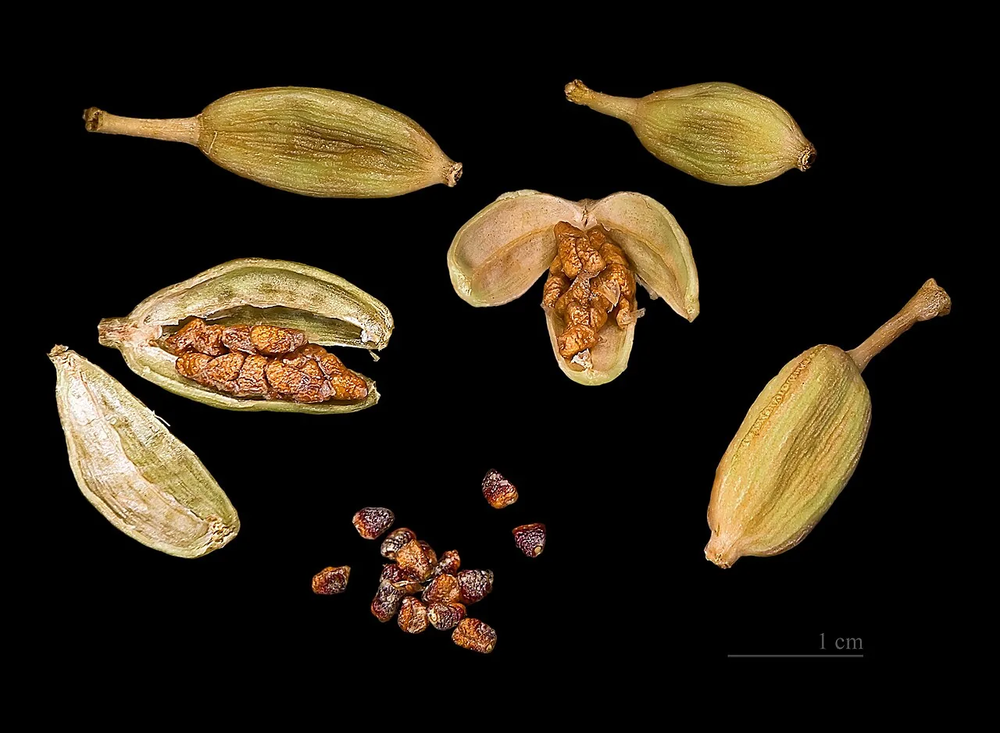
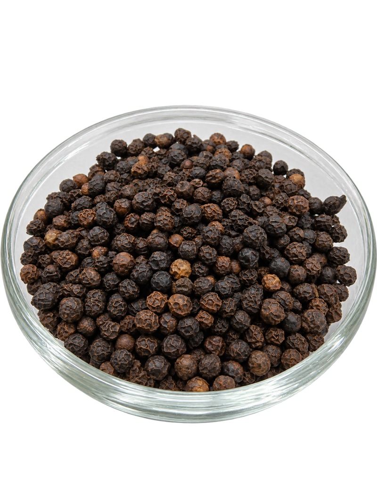
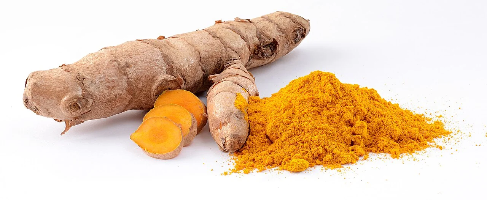
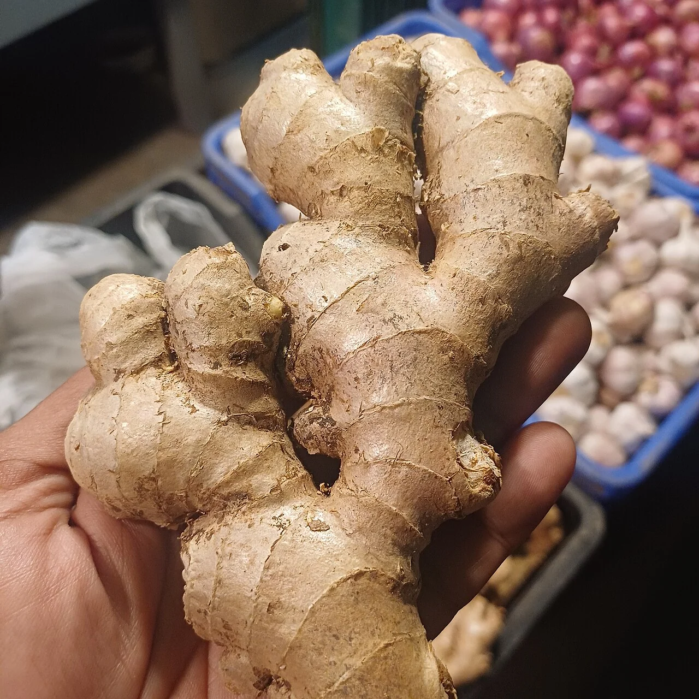
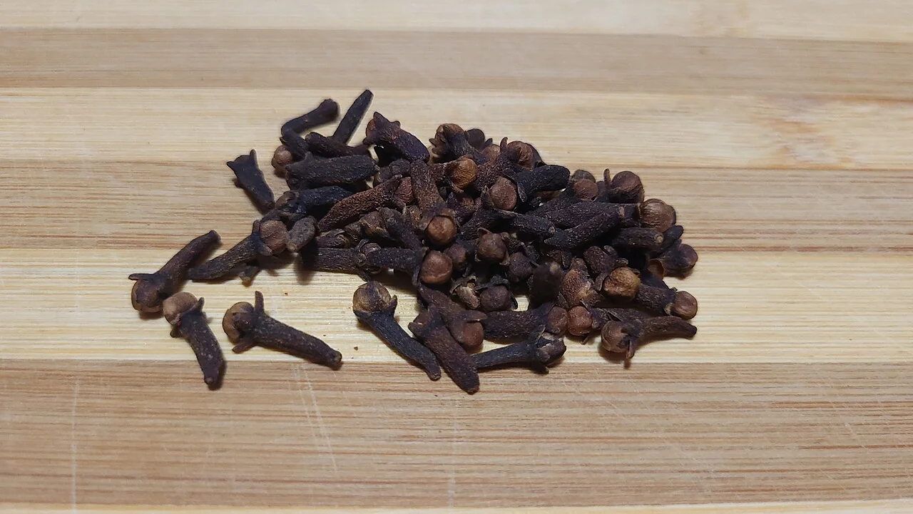
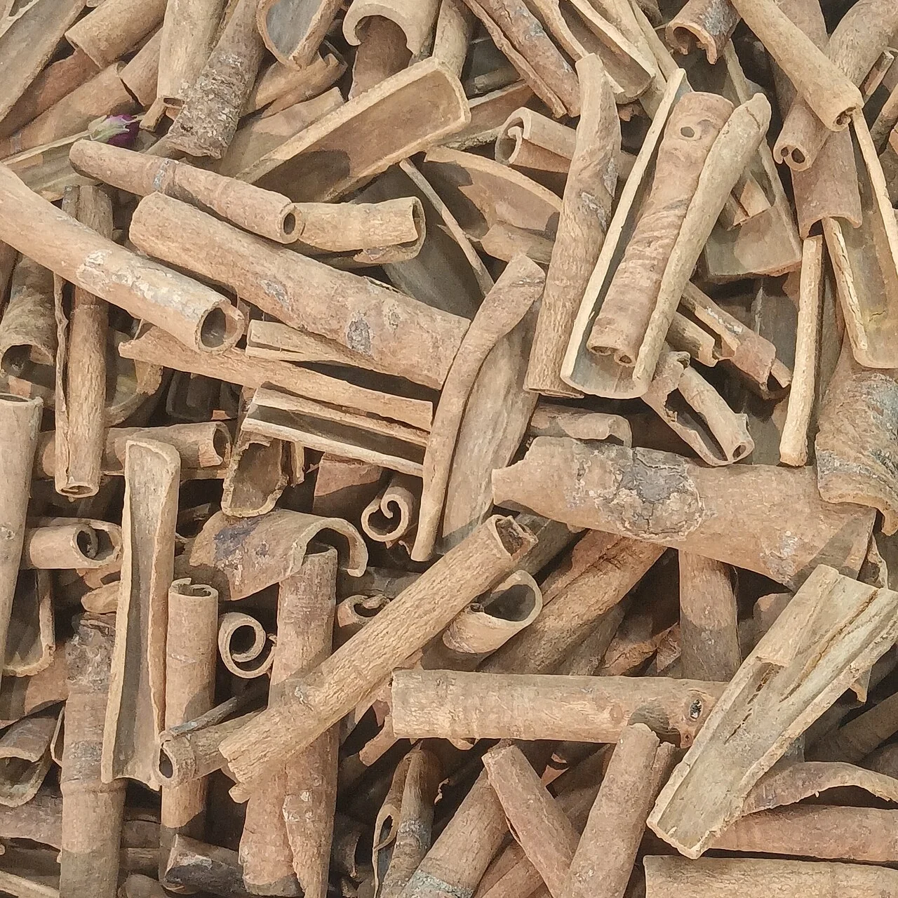

The aromatic
hills of Kerala.
Discover the spices that thrive in the rich landscapes of Vandiperiyar.

The queen
of spices.
Green cardamom is one of the defining crops of Idukki’s plantation landscape. Its leafy shoots grow beneath shade, while delicate flower stems emerge near the base of the plant and develop into aromatic capsules.
The shade canopy, rainfall and growing environment play an important role in cardamom cultivation. Look closer on a farm walk to discover a crop that is easy to pass by and hard to forget.


A spice
that climbs.
Black pepper vines climb supports and trees, giving spice gardens their distinctive vertical character.
At Nechekattu Farm, pepper cultivation connects us with the traditional spice-growing knowledge of Kerala.
Our pepper varieties include Karimunda, Vellamunda and Panniyoor. Walk through the garden to discover the plants behind a familiar ingredient.
Familiar flavours.
Living roots.
Alongside coffee, cardamom and pepper, discover the other spices cultivated at the farm.

Turmeric
Beneath the soil, a familiar golden rhizome.

Ginger
A spice garden story that starts underground.

Clove
Aromatic buds, part of our spice-growing landscape.

Cinnamon
Discover the tree behind a familiar fragrant spice.

Follow the scent
of the hills.
Explore cardamom, pepper and the other spices that make the landscape of Nechekattu Farm.